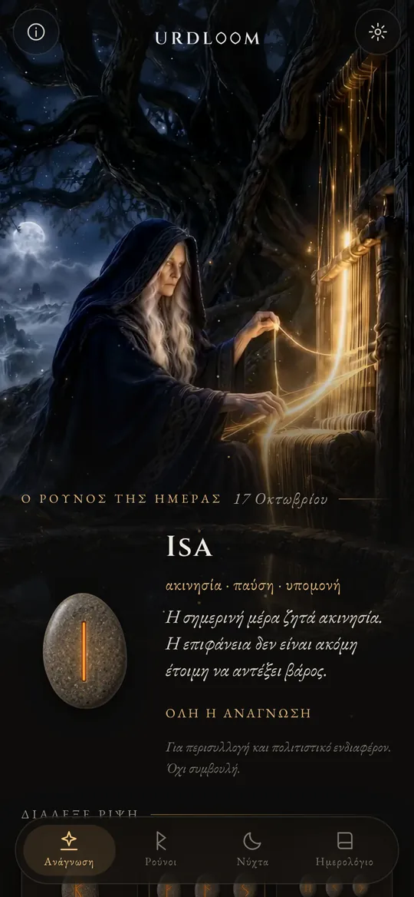
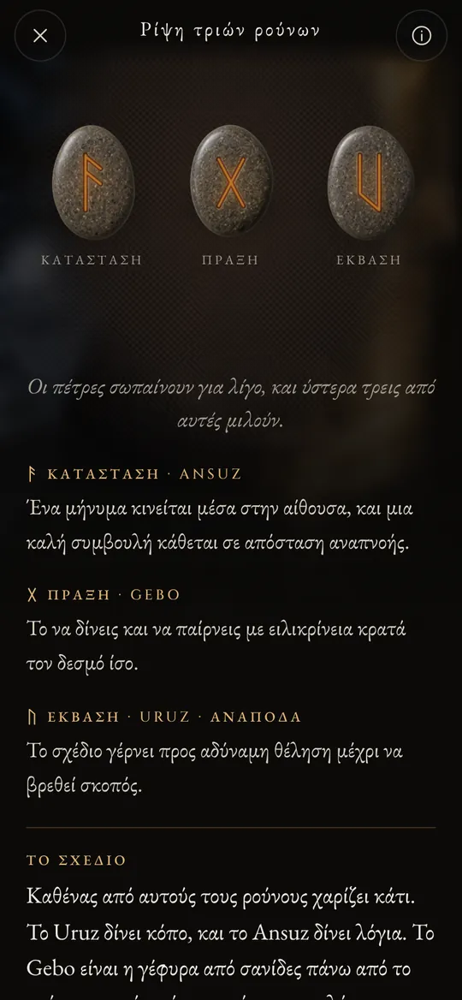
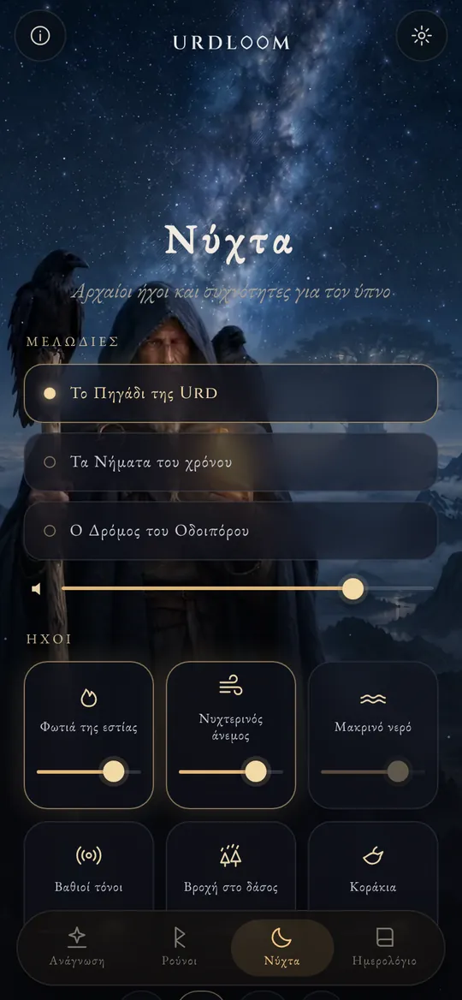
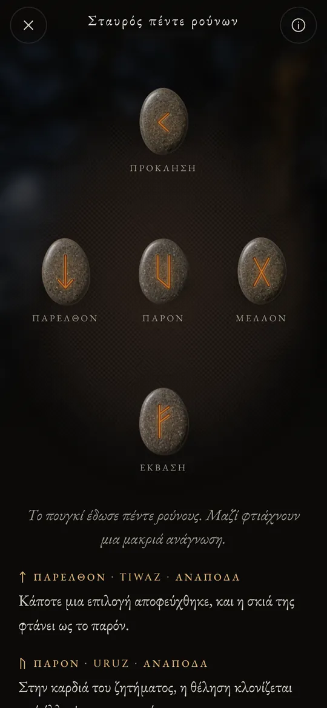

Αναγνώσεις ρούνων από το πηγάδι της μοίρας.
Ρίξε το Elder Futhark, διάβασε ό,τι πέσει με τη φωνή των παλιών ποιημάτων και άφησε τους ήχους της νύχτας να σε πάρουν στον ύπνο.
Τρεις γυναίκες κάθονται σε ένα πηγάδι
Στα παλιά σκανδιναβικά ποιήματα, τρεις Νόρνες κάθονται σε ένα πηγάδι κάτω από το Γιγκντρασίλ, το δέντρο του κόσμου. Ποτίζουν τις ρίζες του, χαράζουν ραβδιά και ορίζουν τη ζωή όσων γεννιούνται. Η μεγαλύτερη είναι η Urd. Το όνομά της σημαίνει «ό,τι έχει γίνει», και το πηγάδι παίρνει το όνομά του από εκείνη.
Το Urdloom πήρε το όνομά του από εκείνη και από τον αργαλειό (στα αγγλικά loom) όπου, όπως έλεγαν, υφαινόταν η μοίρα. Η εφαρμογή κρατά αυτή τη διάθεση: ένα πουγκί με πέτρες στο χέρι σου, ένα ύφασμα στο πάτωμα και αναγνώσεις γραμμένες με τη φωνή των σάγκα, όχι με τη φωνή ενός ωροσκοπίου.

Από εκεί έρχονται κόρες που πολλά γνωρίζουν, τρεις από τη λίμνη κάτω από το δέντρο.Völuspá, στροφή 20
Κράτα, κούνησε, άφησε
Κράτα το πουγκί και οι πέτρες κροταλίζουν στο χέρι σου. Άφησέ το και πετάγονται στο ύφασμα, κυλούν, ηρεμούν και γυρίζουν μία μία. Η ανάγνωση εμφανίζεται από κάτω τους.

Ένας ρούνος
Μία πέτρα για τη μέρα που έρχεται ή για μια ερώτηση που απαντιέται με ναι ή όχι. Ένα άγγιγμα και ρίχνεται.


Ρίψη τριών ρούνων
Κατάσταση, πράξη, έκβαση. Διαβάζονται από αριστερά προς τα δεξιά σαν μια σύντομη σάγκα και ύστερα ως σύνολο: ένα τελευταίο νήμα δείχνει πώς μιλούν οι τρεις μεταξύ τους.

Σταυρός πέντε ρούνων
Παρελθόν, παρόν και μέλλον στη μέση, η πρόκληση από πάνω και η έκβαση από κάτω, κι εσύ στέκεσαι στην καρδιά του σταυρού.




Κάθε ανάγνωση γράφτηκε με το χέρι: οι είκοσι τέσσερις ρούνοι, κάθε ζευγάρι και όλοι οι 2.024 συνδυασμοί τριών, σε καθεμία από τις είκοσι δύο γλώσσες. Τίποτα δεν παράγεται αυτόματα όσο περιμένεις.

Οι είκοσι τέσσερις ρούνοι
Το Elder Futhark είναι το αρχαιότερο ρουνικό αλφάβητο και χαρασσόταν περίπου από τον 2ο ως τον 8ο αιώνα. Τα είκοσι τέσσερα σημάδια του χωρίζονται σε τρεις οικογένειες των οκτώ, τα λεγόμενα ætt, και καθεμία παίρνει το όνομά της από τον θεό που ο ρούνος του στέκεται στην αρχή της. Άγγιξε μια πέτρα για να τη διαβάσεις.
Το ætt του Φρέυρ
Το ætt του Hagal
Το ætt του Τυρ
Τα ονόματα των ρούνων διατηρούνται στην παλιά τους μορφή σε κάθε γλώσσα. Είναι τα ονόματα των ίδιων των σημαδιών, όπως τα ανασύνθεσαν οι μελετητές από τα ρουνικά ποιήματα και τα αρχαιότερα αλφάβητα.
Μια σύντομη ιστορία των ρούνων
Οι ρούνοι είναι πρώτα απ' όλα γράμματα. Οι γερμανικοί λαοί τους χάραζαν σε ξύλο, κόκαλο, μέταλλο και πέτρα για περίπου χίλια πεντακόσια χρόνια. Έτσι έφτασαν ως εμάς τα σημάδια και η παλιά συνήθεια της κλήρωσης.

Κλήροι σε λευκό ύφασμα
Ο Ρωμαίος ιστορικός Τάκιτος γράφει ότι οι γερμανικοί λαοί κόβουν ένα κλαδί από οπωροφόρο δέντρο σε μικρά ξυλάκια, τα σημαδεύουν με σύμβολα και τα σκορπίζουν πάνω σε ένα λευκό ύφασμα. Ένας ιερέας ή ο αρχηγός του σπιτιού σηκώνει τρία, ένα ένα, και τα διαβάζει. Δεν λέει ότι τα σύμβολα ήταν ρούνοι, όμως η κίνηση είναι αυτή που κρατά το Urdloom.
Οι πρώτες επιγραφές
Μια κοκάλινη χτένα από τον βάλτο του Vimose στη Δανία φέρει μία από τις αρχαιότερες γνωστές ρουνικές επιγραφές, μία μόνο λέξη: harja. Αιχμές δοράτων, πόρπες και φυλαχτά από τους ίδιους αιώνες δείχνουν ότι η γραφή είχε ήδη απλωθεί σε όλο τον Βορρά.
Όλη η σειρά σε μία πέτρα
Στην πέτρα του Kylver, στο Γκότλαντ, κάποιος χάραξε και τα είκοσι τέσσερα σημάδια με τη σειρά τους. Είναι το αρχαιότερο πλήρες futhark που έχουμε. Η σειρά παίρνει το όνομά της από τα πρώτα έξι γράμματα: f, u, th, a, r, k.
Τα χρυσά κέρατα
Το ένα από τα δύο χρυσά κέρατα του Gallehus στη Δανία φέρει έναν παρηχητικό στίχο: «Εγώ, ο Hlewagastiz, γιος του Holt, έφτιαξα το κέρας». Είναι ένας από τους πρωιμότερους στίχους ποίησης σε οποιαδήποτε γερμανική γλώσσα.
Δεκαέξι σημάδια για την εποχή των Βίκινγκ
Στη Σκανδιναβία το αλφάβητο περιορίζεται σε δεκαέξι σημάδια, το Νεότερο Futhark. Χιλιάδες αναμνηστικές πέτρες στήνονται με τα γράμματά του, ανάμεσά τους και οι μεγάλες πέτρες του Jelling στη Δανία.
Τα ποιήματα καταγράφονται
Ισλανδοί γραφείς καταγράφουν τα ποιήματα της Έδδας. Στη Völuspá οι Νόρνες κάθονται στο πηγάδι της Urd, και στο Hávamál ο Όντιν κρέμεται εννιά νύχτες στο ανεμοδαρμένο δέντρο και παίρνει τους ρούνους με μια κραυγή.
Ένας στίχος για κάθε ρούνο
Τα ρουνικά ποιήματα από τη Νορβηγία και την Ισλανδία, μαζί με ένα παλαιότερο αγγλοσαξονικό, δίνουν σε κάθε ρούνο έναν σύντομο στίχο: τα βόδια φέρνουν έριδα στους συγγενείς, το χαλάζι είναι ο πιο κρύος σπόρος, ο πάγος γλιστράει πολύ. Πολλά από όσα ξέρουμε για τις σημασίες των ρούνων προέρχονται από αυτούς τους στίχους.
Ξανά ανάγνωση
Η χρήση των ρούνων για περισυλλογή είναι μια σύγχρονη αναβίωση που στηρίζεται σε αυτά τα ποιήματα και στις εικόνες των Έδδων. Το Urdloom στέκεται ανοιχτά μέσα σε αυτή την παράδοση: δεν ισχυρίζεται ότι είναι αρχαίο μαντείο, μόνο ότι διαβάζει τα παλιά σημάδια με φροντίδα.

Αρχαίοι ήχοι και συχνότητες για τον ύπνο
Όταν τελειώνει η μέρα, ο οδοιπόρος βγαίνει κάτω από τα αστέρια. Διάλεξε μια μελωδία, πρόσθεσε ήχους από πάνω και βάλε χρονόμετρο. Οι ήχοι συνεχίζουν να παίζουν με κλειστή οθόνη και σβήνουν μόνοι τους.
Τρεις μελωδίες: «Το Πηγάδι της Urd», «Τα Νήματα του χρόνου» και «Ο Δρόμος του Οδοιπόρου», χτισμένες πάνω σε λαρυγγικό τραγούδι, τύμπανο πλαισίου και ταγκελχάρπα με δοξάρι.
Έξι στρώσεις για να τις αναμείξεις, η καθεμία με τη δική της ένταση: φωτιά της εστίας, νυχτερινός άνεμος, μακρινό νερό, βαθιοί τόνοι, βροχή στο δάσος και κοράκια.
Κάθε ήχος φτιάχτηκε για το Urdloom. Τίποτα δεν παίζει από το ίντερνετ.
Μικρά πράγματα που μετράνε
- Ένας ρούνος κάθε πρωί
- Μια πέτρα περιμένει γυρισμένη ανάποδα στην πρώτη οθόνη. Αν θέλεις, ένα σύντομο σημείωμα σου λέει κάθε πρωί ποιος ρούνος τραβήχτηκε για σένα.
- Ένα ημερολόγιο
- Φύλαξε τις αναγνώσεις που σου μιλούν, μαζί με την ερώτηση που έκανες.
- Αναγνώσεις που μπορείς να μοιραστείς
- Στείλε μια ανάγνωση ως εικόνα: τις πέτρες όπως έπεσαν και τα λόγια από κάτω τους.
- Είκοσι δύο γλώσσες
- Καθεμία γραμμένη και ελεγμένη από ανθρώπους που τη διαβάζουν, με γραμματοσειρά και μέγεθος που μπορείς να αλλάξεις.
Ό,τι γίνεται εδώ, μένει εδώ
Το Urdloom λειτουργεί χωρίς ίντερνετ. Δεν υπάρχει λογαριασμός, εγγραφή ή διαφήμιση, και δεν περιέχει κανενός είδους ανάλυση ή παρακολούθηση. Οι ερωτήσεις, οι αναγνώσεις και το ημερολόγιό σου μένουν στο τηλέφωνό σου.
ΑπόρρητοΕρωτήσεις
Λέει το Urdloom το μέλλον;
Όχι. Οι αναγνώσεις είναι για περισυλλογή και πολιτιστικό ενδιαφέρον. Δείχνουν, όπως έδειχναν οι παλιοί ρούνοι, και το νόημα παίρνει μορφή μέσα στη δική σου ζωή. Τίποτα στην εφαρμογή δεν αποτελεί ιατρική, οικονομική, νομική ή άλλη επαγγελματική συμβουλή.
Γιατί η γλώσσα ακούγεται παλιά;
Οι ρούνοι έρχονται από έναν κόσμο ποιημάτων, σάγκα και αινιγμάτων. Γράψαμε τις αναγνώσεις με αυτή τη φωνή επίτηδες και τις κρατήσαμε όσο πιο κοντά γινόταν στη ρουνική παράδοση, σε κάθε γλώσσα.
Χρειάζομαι σύνδεση στο ίντερνετ;
Όχι. Τα πάντα, από τις αναγνώσεις ως τους νυχτερινούς ήχους, βρίσκονται μέσα στην εφαρμογή.
Ποιες γλώσσες υπάρχουν;
Αγγλικά, τουρκικά, γερμανικά, γαλλικά, ισπανικά, ιταλικά, πορτογαλικά, ρωσικά, ουκρανικά, πολωνικά, ολλανδικά, σουηδικά, νορβηγικά, φινλανδικά, ελληνικά, αραβικά, χίντι, ινδονησιακά, ιαπωνικά, κορεατικά, κινεζικά και αλβανικά.
Γράψε μας
Ερωτήσεις, μια λέξη που ακούγεται λάθος στη γλώσσα σου ή μια ανάγνωση που σου έμεινε: διαβάζουμε κάθε μήνυμα.
support@urdloom.com